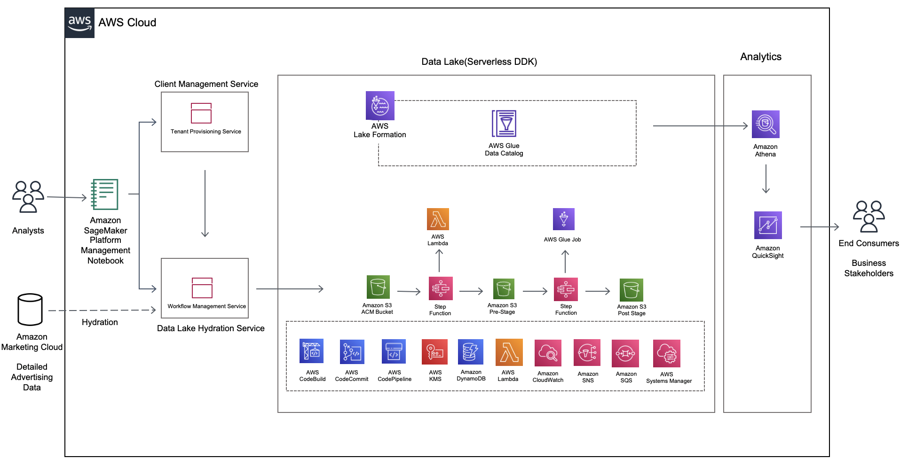

AMC Analytics on AWS Solution on the AWS Cloud
Quick Start Reference Deployment

DRAFT DOCUMENT / UNOFFICIAL GUIDANCE
This portion of the deployment guide is located at docs/partner_editable/__settings.adoc_
March 2022 |
| Visit our GitHub repository for source files and to post feedback, report bugs, or submit feature ideas for this Quick Start. |
This Quick Start was created by Ad Tech Solutions in collaboration with Amazon Web Services (AWS). Quick Starts are automated reference deployments that use AWS CloudFormation templates to deploy key technologies on AWS, following AWS best practices.
Overview
This portion of the deployment guide is located at docs/partner_editable/overview_target_and_usage.adoc
This guide provides instructions for deploying the AMC Analytics Quick Start reference architecture on the AWS Cloud. It is for Amazon Marketing Cloud users who want to build custom analytics using data lakes, tenant provisions, and workflow-management features. |
| Amazon may share user-deployment information with the AWS Partner that collaborated with AWS on the Quick Start. |
AMC Analytics on AWS Solution on AWS
This portion of the deployment guide is located at docs/partner_editable/product_description.adoc
This Quick Start deploys the AMC Analytics, which contains the following four modules:
For more information about AMC, see Amazon Marketing Cloud. |
AWS costs
You are responsible for the cost of the AWS services and any third-party licenses used while running this Quick Start. There is no additional cost for using the Quick Start.
The AWS CloudFormation templates for Quick Starts include configuration parameters that you can customize. Some of the settings, such as the instance type, affect the cost of deployment. For cost estimates, see the pricing pages for each AWS service you use. Prices are subject to change.
| After you deploy the Quick Start, create AWS Cost and Usage Reports to deliver billing metrics to an Amazon Simple Storage Service (Amazon S3) bucket in your account. These reports provide cost estimates based on usage throughout each month and aggregate the data at the end of the month. For more information, see What are AWS Cost and Usage Reports? |
Software licenses
This portion of the deployment guide is located at docs/partner_editable/licenses.adoc
No licenses are required to deploy this Quick Start. All of the AWS services used in this deployment incur usage costs. |
Architecture
This portion of the deployment guide is located at docs/partner_editable/architecture.adoc
Deploying this Quick Start for a new virtual private cloud (VPC) with default parameters builds the following AMC Analytics environment in the AWS Cloud.

Figure 1. Quick Start architecture for AMC Analytics on AWS
|
Planning the deployment
Specialized knowledge
This deployment requires a moderate level of familiarity with AWS services. If you’re new to AWS, see Getting Started Resource Center and AWS Training and Certification. These sites provide materials for learning how to design, deploy, and operate your infrastructure and applications on the AWS Cloud.
This portion of the deployment guide is located at docs/partner_editable/specialized_knowledge.adoc
This Quick Start also assumes familiarity with the following AWS services and related frameworks:
|
AWS account
If you don’t already have an AWS account, create one at https://aws.amazon.com by following the on-screen instructions. Part of the sign-up process involves receiving a phone call and entering a PIN using the phone keypad.
Your AWS account is automatically signed up for all AWS services. You are charged only for the services you use.
Technical requirements
Before you launch the Quick Start, review the following information and ensure that your account is properly configured. Otherwise, deployment might fail.
Resource quotas
If necessary, request service quota increases for the following resources. You might need to request increases if your existing deployment currently uses these resources and if this Quick Start deployment could result in exceeding the default quotas. The Service Quotas console displays your usage and quotas for some aspects of some services. For more information, see What is Service Quotas? and AWS service quotas.
This portion of the deployment guide is located at docs/partner_editable/service_limits.adoc
Resource |
Amazon Simple Storage Service (S3) buckets |
AWS KMS |
Amazon DynamoDB |
AWS Lambda |
Amazon SNS |
Amazon SQS |
AWS Systems Manager |
AWS Glue Jobs |
AWS Lake Formation |
AWS Glue Catalog |
AWS CloudFormation Stacks |
AWS Identity and Access Management (IAM) roles |
Amazon CloudWatch Log Group |
AWS CodeCommit Repository |
AWS CodePipeline Pipeline |
AWS CodeBuild Projects |
Amazon Athena |
Amazon SageMaker Notebook |
Amazon QuickSight (dashboard setup guide available |
Supported AWS Regions
For any Quick Start to work in a Region other than its default Region, all the services it deploys must be supported in that Region. You can launch a Quick Start in any Region and see if it works. If you get an error such as “Unrecognized resource type,” the Quick Start is not supported in that Region.
For an up-to-date list of AWS Regions and the AWS services they support, see AWS Regional Services.
| Certain Regions are available on an opt-in basis. For more information, see Managing AWS Regions. |
IAM permissions
Before launching the Quick Start, you must sign in to the AWS Management Console with IAM permissions for the resources that the templates deploy. The AdministratorAccess managed policy within IAM provides sufficient permissions, although your organization may choose to use a custom policy with more restrictions. For more information, see AWS managed policies for job functions.
Deployment options
This portion of the deployment guide is located at docs/partner_editable/deployment_options.adoc
This Quick Start provides one deployment option:
|
This portion of the deployment guide is located at docs/partner_editable/pre-reqs.adoc
Deployment steps
This portion of the deployment guide is located at docs/partner_editable/deploy_steps.adoc
Confirm your AWS account configuration
-
Sign in to your AWS account at https://aws.amazon.com with an IAM user role that has the necessary permissions. For more information, see Planning the deployment, earlier in this guide.
-
Ensure that your AWS account is configured correctly, as discussed in the Technical requirements section.
Each deployment takes about 1.5 hours to complete.
Check the AWS Region that’s displayed in the upper-right corner of the navigation bar, and change it if necessary. This Region is where you build the infrastructure. The template is launched in the us-east-1 Region by default. For more information, see Supported AWS Regions, earlier in this guide.
Prerequisites for the Deployment
To complete this deployment, you’ll need the following in your local environment
Programmatic access to an AWS Account Python (version 3.7 or above) and its package manager, pip (version 9.0.3 or above), are required
$ python --version
$ pip --versionThe AWS CLI installed and configured
$ aws --versionThe AWS CDK CLI (version 2.10 and above) installed
$ cdk --versionThe Git CLI installed and configured
$ git --versionIf this is your first time using Git, set your git username and email by running:
$ git config --global user.name "YOUR NAME"
$ git config --global user.email "YOU@EMAIL.COM"You can verify your git configuration with
$ git config --list[OPTIONAL] Using AWS Cloud9 for Deployment
If you would like to deploy this quickstart using an AWS Cloud9 Environment rather than on your local environment, follow these steps to set up AWS Cloud9:
-
Log in to the AWS account console using the Admin role and select an AWS region. We recommend choosing a mature region where most services are available (e.g. eu-west-1, us-east-1…)
-
Navigate to
Cloud9in the AWS console. Set up a [Cloud9 Environment](https://docs.aws.amazon.com/cloud9/latest/user-guide/create-environment-main.html) in the same AWS region (t3.small or higher, Amazon Linux 2) and open the IDE -
Download the package, upload it to your Cloud9 instance, and unzip it
-
Install jq by running in your command line:
$ sudo yum install jqPython, Pip, AWS CLI, AWS CDK CLI, and Git CLI packages should all be installed and configured for you by defualt in your Cloud9 environment. Ensure that these pacakges are installed with the correct version with the following commands:
$ python --version
$ pip --version
$ aws --version
$ cdk --version
$ git --versionThe version requirements for the packages installed are: Python (version 3.7 or above) pip (version 9.0.3 or above) AWS CDK CLI (version 2.10 and above)
Initial setup with the DDK CLI
Clone the repository for AMC QuickStart
$ git clone GITHUB-PATH
$ cd amc_quickstartInstall AWS DDK CLI, a command line interface to manage your DDK apps
$ pip install aws-ddkTo verify the installation, run:
$ ddk --helpCreate and actitavte a virtualenv
$ python -m venv .venv && source .venv/bin/activateInstall the dependencies from requirements.txt This is when the AWS DDK Core library is installed
$ pip install -r requirements.txt --no-cache-dirIf your AWS account hasn’t been used to deploy DDK apps before, then you need to bootstrap your environment:
$ ddk bootstrap --help
$ ddk bootstrap --profile [AWS_PROFILE] --trusted-accounts [AWS_ACCOUNT_ID]You might recognize a number of files typically found in a CDK Python application (e.g. app.py, cdk.json…). In addition, a file named ddk.json holding configuration about DDK specific constructs is present. Edit the DDK file with right account id, the name of the CodeCommit repository to reference (you will create this repository at a later step)and other data lake parameters (i.e. app, org, team, dataset, and pipeline names).
$ Edit ddk.jsonInitialise git for the repository
$ git init --initial-branch mainExecute the create repository command to create a new codecommit repository
(Make Sure the AMC_QUICKSTART_REPO_NAME matches the repository name value in the ddk.json configuration file before executing)
$ ddk create-repository AMC_QUICKSTART_REPO_NAME --profile [AWS_PROFILE] --region [AWS_REGION]Add and push the initial commit to the repository
$ git config --global credential.helper "!aws codecommit --profile <my-profile> credential-helper $@"
$ git config --global credential.UseHttpPath true
$ git add .
$ git commit -m "Configure AMC QUICKSTART"
$ git push --set-upstream origin mainDeploying the Foundational Infrastructure
Once the above steps are performed, run the deploy command to deploy the the Foundational Infrastructure.
$ ddk deploy --profile [AWS_PROFILE]The deploy all step deploys an AWS CodePipeline along with its respective AWS CloudFormation Stacks. The last stage of each pipeline delivers the AMC Quickstart infrastructure respectively in the child (default dev) environment through CloudFormation.

Foundations: This application creates the foundational resources for the quickstart. These resources include Lambda Layers, Glue Jobs, S3 Buckets, routing SQS Queues, and Amazon DynamoDB Tables for data and metadata storage.
Data Lake: This application creates the resources for the data lake. All the resources needed for orchestration between services and data processing code are provisioned here.
Microservices: This application creates the resources for the supporting Microservices. All the resources needed for orchestration between the microservices, data processing code, and data and metadata storage for the microservices are provisioned here.
For a walkthrough of the steps the AWS CodePipeline goes through to deploy these resources please refer to [here](#amc-quickstart-codepipeline-steps).
NOTE: If deploying in a new AWS Account, the Assets stage of the CodePipeline may fail due to limitations for the number of concurrent file assets to publish. This is a current limitation of AWS CodeBuild. To fix, click the Retry button in CodePipeline for the Assets Stage. This will manually continue the Assets Stage to continue building file assets from its most current progress.
Enable Default Lake Formation Permissions
In order to query the data in Athena, we highly recommend you enable default Lake Formation Permissions and give your current IAM Role permisssion in AWS Lake Formation. Enabling AWS Lake Formation Permissions helps to build, secure, and manage your data lake quickly and efficiently. Follow the below steps in order to enable Lake Formation and grant your Role the correct permissions:
-
In your AWS Account Console go to the AWS Lake Formation page
-
In the navigation pane, under Data catalog, choose Settings
-
Clear both check boxes and choose Save (you have now enabled Lake Formation to control your Data Catalog resources)
-
-
In the navigation pane under Permissions, choose Data Lake Permissions
-
Click the Grant Button on the upper right corner
-
For IAM users and roles enter your current IAM Role
-
For LF-Tags or catalog resources select Named data catalog resources
-
For Databases, select your database with name:
aws_datalake_{environment}_{team}_{name}_db"(default name isaws_datalake_dev_demoteam_amcdataset_db) -
For Tables, select
All Tables -
Leave
Data Filters - OptionalEmpty
-
-
For Table Permissions select
Super -
Click Grant at the bottom of the page to create your Lake Formation Permissions
-
You have enabled Lake Formation permissions and given your IAM Role permissions to access all tables in your Glue Database. You are now able to access the data returned from your workflow execution using Amazon Athena once the data is uploaded and processed in the data lake.
AMC Quickstart CodePipeline Steps
The Code Pipeline Steps are:
-
Source → Pull code from the source CodeCommit Repository
-
Build → Runs
cdk synthto translate CDK defintions into CloudFormation Template Definitions -
UpdatePipeline → Automatically update if new CDK applications or stages are added in the source code
-
Assets → Publish CDK Assets
-
AMCQuickstart → Prepares and Deploys all of the Resources in CloudFormation Stacks, including:
-
Foundational Resources
-
Data Lake Resources
-
Microservice Resources
Hydrating the Data Lake with SageMaker Notebooks
To hydrate the data lake and begin populating the data lake with data from your AMC Instance, follow the steps below:
-
Log In to your AWS Account and go to Amazon SageMaker
-
On the Left Side of Your Screen Click on Notebook -→ Notebook Instances (you should see one notebook named
saw-platform-managerwith Status "InService") -
Click "Open JupyterLab" to open the Notebook Instance in a new tab
-
Right click the
Getting_Started_With_AMC_Quickstart.ipynbNotebook in theplatform_managerfolder-
Duplicate the Notebook
-
Follow the steps in the notebook to hydrate the data lake.
-
This Notebook will cover the following:
Insert TPS Records: To initialize the process of onboarding your AMC instance on the Amazon AD Tech platform, this notebook will walk through the steps to adds client configurations to a TPS Customer Configuration table in Amazon DynamoDB. The configuration includes your AMC Endpoint URL, AMC Bucket Name and other related information on your AMC Instance. The Tenant Provisioning Service (TPS) will then automatically:
-
Onboard clients using configuration which is persisted in a DynamoDB Table. It helps to reduce time to onboard new customers
-
Provide functionality to automatically enable different modules (AMC/Sponsored ADs/DSP) during the onboarding process for each client
-
Provide a centralized location to manage various clients and modules and supports multi-tenancy
Create Workflows: To initialize the creation, scheduling and execution of AMC workflows, this notebook will walk through the steps to add a workflow to an AMC Workflows table in Amazon DynamoDB. From there you will also invoke this workflow to execute and populate data from your AMC Instance to your AMC S3 Bucket. WFM also allows you to:
-
Automatically trigger the deployment of the SQS queues, IAM policies, workflows and workflow schedules in WFM for the customer’s AMC instance upon adding or updating a customer record to the Tenant Provisioning Service (TPS)
-
Synchronize workflows and workflow schedules in the Workflow Library service with multiple AMC Instances
-
Send execution requests to an SQS queue rather than directly to the AMC endpoint to prevents timeout failures when there are large number of requests in a short period of time
-
Scheduled with dynamic relative time windows rather than using AMC’s scheduling feature which only allows predefined scheduled reporting such as Daily or Weekly
-
Track the status of all workflow executions for customer AMC instances whether they are submitted through WFM or other means (postman, etc.). Having the status synced to DynamoDB allows events to be triggered or notifications to be sent when executions change state. This table can also be used to track historical executions for troubleshooting or performance monitoring.
+
+ . On the Configure stack options page, you can specify tags (key-value pairs) for resources in your stack and set advanced options. When you finish, choose Next. . On the Review page, review and confirm the template settings. Under Capabilities, select the two check boxes to acknowledge that the template creates IAM resources and might require the ability to automatically expand macros. . Choose Create stack to deploy the stack. . Monitor the status of the stack. When the status is CREATE_COMPLETE, the AMC Analytics deployment is ready. . To view the created resources, see the values displayed in the Outputs tab for the stack.
This portion of the deployment guide is located at docs/partner_editable/additional_info.adoc
Test the deployment
-
Monitor the AWS CloudFormation, AWS CodeBuild and AWS CodePipeline in us-east-1 region and should not have any errors or failures. It will take approximate 90 minutes.
-
Once finished go to Amazon Athena switch the role on the top right to @-saw-datalake-users-, Ex. - @demoteam-saw-datalake-users-us-east-1. If using the default settings of the module, put the Account Id the same as the AWS Account Id being used. The Role name should be @demoteam-saw-datalake-users-us-east-1. Switch Amazon Athena workgroup to ---workgroup, EX - demoteam-demodl-dev-workgroup.
Building Your First QuickSight Dashboard with Reports from AMC
The following section walks you through how to build a QuickSight dashboard with a report from Amazon Marketing Cloud (AMC). With AMC enabling advertisers to query event level data within a privacy friendly environment and Amazon QuickSight offering users a cloud-powered business analytics service to build visualizations, perform ad-hoc analysis, and quickly get business insights from their data - you can begin to build out a business intelligence strategy.
Advertisers can use QuickSight to analyze reports from AMC to identify valuable insights and then scheduling, publishing dashboards to provide marketing insights in one central location. Custom-built dashboards can pull from a series of custom workflows built on a scheduled cadence.
Note: As a prerequisite, you should have executed at least one Time to Conversion query against AMC. The result will be used in this section to populate a QuickSight visualization.
Initial QuickSight Setup
You will need author access to a QuickSight Account to get started with building your first dashboard. If you don’t have a QuickSight account already, below are the steps to create one.
-
Launch the AWS Console (https://console.aws.amazon.com) in a new browser tab, search for QuickSight and launch it.
-
On the QuickSight page, click Sign up for QuickSight button.
-
Keep the default Enterprise edition, scroll down and click the Continue button.
-
Enter a QuickSight account name & Notification email address. Enter your official email as the notification email.
-
Scroll down and click the Finish button. (It can take 15-30 Secs to set up the account)
-
Click the Go to Amazon QuickSight button. You will now be taken to QuickSight console.
Authorize Your QuickSight Connection
To work with Lake Formation and Athena, make sure that you have AWS resource permissions configured in Amazon QuickSight:
-
Enable access to Amazon Athena.
-
Enable access to the correct buckets in Amazon S3 Usually S3 access is enabled when you enable Athena. However, because you can change S3 permissions outside of that process, it’s a good idea to verify them separately
Use the following procedure to make sure that you successfully authorized Amazon QuickSight to use Athena. Permissions to AWS resources apply to all Amazon QuickSight users.
To perform this action, you must be an Amazon QuickSight administrator. To check if you have access, verify that you see the Manage QuickSight option when you open the menu from your profile at upper right.
For more information, review: https://docs.aws.amazon.com/quicksight/latest/user/lake-formation.html
To authorize Amazon QuickSight to access Athena and Amazon S3:
-
Choose your profile name (upper right). Choose Manage QuickSight, and then choose Security & permissions.
-
Under QuickSight access to AWS services, choose Manage.
-
Find Athena in the list. Clear the box by Athena, then select it again to enable Athena. Then choose Next.
-
Under S3 Bucket, choose the S3 buckets that you want to access from Amazon QuickSight.
-
From the right column, Write permission for Athena Workgroup, choose the S3 buckets you could write your Athena results too.
-
Choose Finish to confirm your selection or choose Cancel to exit without saving.
-
Click Save, to update your new settings for Amazon QuickSight access to AWS services or choose Cancel to exit without making any changes.
To authorize Amazon QuickSight through AWS Lake Formation:
-
Collect the Amazon Resource Names (ARNs) of the Amazon QuickSight users and groups that need to access the data in Lake Formation. These users should be Amazon QuickSight authors or administrators.
-
Use the AWS CLI to find user ARNs or you can construct the ARNs for each user manually.
-
To construct manually, replace REGION_NAME, ACCOUNT_ID, and QUICKSIGHT_USERNAME:
arn:aws:quicksight:<REGION_NAME>:<ACCOUNT_ID>:user/default/<QUICKSIGHT_USERNAME> -
To collect user ARNs programmatically, run the following list-users command in your terminal (Linux or Mac) or at your command prompt (Windows):
aws quicksight list-users --aws-account-id 111122223333 --namespace default --region us-east-1
-
-
Next, Sign in to the AWS Console and navigate to AWS Lake Formation as the data lake administrator. A data lake administrator can grant any principal (IAM, QuickSight, or Active Directory) permissions to Data Catalog resources (databases and tables) or data lake locations in Amazon S3.
-
Choose Databases.
-
Select the circle next to the database you want to grant access to your QuickSight user.
-
From the Actions drop-down menu, choose Grant.
-
Select SAML users and groups and enter the QuickSight user ARN.
-
Then click into Named data catalog resources
-
Under Tables, open the drop-down menu and select All tables or selectively choose individual tables to permission access to.
-
For Table permissions, choose Select and Describe.
-
Then click Grant.
-
Repeat the preceding steps to grant multiple database permissions to your QuickSight user ARN or other users and groups.
Query & Visualize Your First AMC Use Case
In this section, you’ll step through how to build and analyze a visualization for the Time to Conversion use case.
Overview
Advertisers may typically ask - how long does it takes for our customers to convert after last seeing our ad? This use case will enable you with the dimensions and metrics to answer that question.
It is important to understand how long it takes customers who see your ad to complete the conversion, and how that impacts the data you see in your conversion report. Sometimes the conversions happen rapidly, within a few minutes and other times, it might take days for your customers to complete the purchase. You can use this information to adjust the duration of your campaign and promotion to maximize sales.
Key Performance Indicators (KPIs):
| KPI | Definition |
|---|---|
Time to Conversion |
The amount of time customers take from last seeing your ad to purchase. The time has been converted to minutes, hours and days from seconds in the query template. You may adjust it based on your use case. |
Purchases |
The number of times any amount of a promoted product or products are included in a purchase event. Purchase events include video rentals and new Subscribe & Save subscriptions. Sum of purchases from users_that_purchased. |
Total Brand Purchases |
The number of times any number of products are included in a single purchase event. Purchase events include Subscribe & Save subscriptions and video rentals. This counts purchases for promoted products as well as products from the same brands as the products tracked in the order. (Total purchases = Purchases + Purchases Brand Halo) |
Creating the Visualization:
This section provides details on how to create a visualization for the Time to Conversion use case in Amazon QuickSight.
-
Begin by creating a new dataset. Choose Datasets from the navigation pane at left, then choose New dataset.
-
Next, connect to an Athena Data Source with either a using an existing connection profile (more common) or by creating a new one.
-
To use an existing Athena connection profile, scroll down to the FROM EXISTING DATA SOURCES section, and choose the card for the existing data source that you want to use. Choose Create dataset. Cards are labeled with the Athena data source icon and the name provided by the person who created the connection.
-
Next, create a new Athena connection profile, use the following steps:
-
In the FROM NEW DATA SOURCES section, choose the Athena data source card.
-
For Data source name, enter a descriptive name
-
For Athena workgroup, choose your workgroup
-
Choose Validate connection to test the connection
-
Choose Create data source.
-
-
-
On the Choose your table screen, do the following:
-
For Catalog, choose AwsDataCatalog.
-
Choose one of the following:
-
To choose the database and table created for the Time to Conversion use case, choose your database from the dropdown under Database and choose the Time to Conversion table from the Tables list that appears for your database.
-
You can optionally pull the data in with a SQL query, by choosing Use custom SQL
-
-
-
Choose Select
-
Create a dataset and analyze the data using the table by choosing Visualize.
-
In the Fields list pane, choose purchases, time_to_conversion, and total_brand_purchases.
-
Amazon QuickSight uses AutoGraph to create the visual, selecting the visual type that it determines is most compatible with those fields. In this case, it selects a horizontal bar chart that shows the purchases and total_brand_purchases by time_to_conversion.
-
In the Visual types pane, select Vertical bar chart to rotate the chart.
-
Expand the Field wells pane by choosing the expand icon.
-
Choose the X axis field well, choose Sort by, and then choose time_to_conversion.
-
Again from the X axis field well, select the ascending icon.
-
-
Add a Title to the visual
-
On the visual’s right, choose the Format visual icon.
-
In the Format Visual pane that opens on the left, choose the Title tab.
-
Choose Edit title
-
In the Edit title page that opens, type Purchases by Time to Conversion
-
When you’re finished editing, choose Save.
-
-
Change the x-axis label
-
Again, in the Format Visual pane open on the left, choose the X-axis tab.
-
In the text box below time_to_conversion, enter in Time to Conversion.
-
Close the Format Visual pane by choosing the X icon in the upper-right corner of the pane.
-
-
Add data labels to your chart
-
Next, in the Format Visual pane open on the left, choose the Data Labels tab.
-
Check the box to the left of Show data labels to show and customize labels.
-
Close the Format Visual pane by choosing the X icon in the upper-right corner of the pane.
-
-
Add Filters
-
On the far left pane, choose Filter
-
Then in the Filters pane, choose the + in the top right corner.
-
Select advertiser, then repeat for campaign and file_last_modified
-
-
Use a combination of the filters to analyze the performance by time period, to identify windows with the highest conversion rates.
Figure 6. Verical Bar Chart visual in Amazon QuickSight for the Purchases by Time to Conversion AMC use case
For further information on customizing visualizations checkout: https://docs.aws.amazon.com/quicksight/latest/user/working-with-visuals.html
This portion of the deployment guide is located at docs/partner_editable/faq_troubleshooting.adoc
FAQ
Q: What is AWS DDK?
A: The AWS DataOps Development Kit is an open source development framework for customers that build data workflows and modern data architecture on AWS. For more information on this open source framework, reference the documentation [here](https://awslabs.github.io/aws-ddk/).
Q: I encountered a CREATE_FAILED error in CloudFormation when I deployed the Quick Start.
A: Make sure you have bootstrapped the AWS Account(s) in use by running the command:
ddk bootstrap --profile [AWS_PROFILE] --trusted-accounts [AWS_ACCOUNT_ID]
Also, ensure the ddk.json file specifies the correct AWS Account ID for the child environment used to deploy (e.g. default is dev).
For additional information, see [Troubleshooting AWS CloudFormation](https://docs.aws.amazon.com/AWSCloudFormation/latest/UserGuide/troubleshooting.html).
Q: I encountered a FAILED status on the Assets Step of the AWS CodePipeline Deployment.
A: If deploying in a new AWS Account, the Assets stage of the CodePipeline may fail due to limitations for the number of concurrent file assets to publish. This is a current limitation of AWS CodeBuild. To fix, click the Retry button in CodePipeline for the Assets Stage. This will manually continue the Assets Stage to continue building file assets from its most current progress.
#
Q: How do I set up Amazon QuickSight dashboards to visualize the data populated on S3?
A: Follow the documentation [here](README.md) to set up QuickSight Dashboards for your AMC Instance data.
Q: Where can I find more information for the workflow queries available to create and schedule with for my AMC Instance?
A: On the AMC UI, you can view the Interactive Query Library (IQL) for a list of available queries for a set of different use cases. Also, custom queries are supported.
To create, schedule, and manage your workflow queries, refer to the Platform Manager WFM Notebooks in Amazon SageMaker for more detailed documentation.
Q: Where do I find my the configuration for my AMC Instance?
A: On the AMC UI, you can view the Instance Information page for detailed information on the AMC Instance S3 Bucket, Endpoint URL, Data Upload Account, Advertiser IDs, and Entity IDs. Also, you can retrieve this information by raising a ticket to the AMC Team.
Customer responsibility
After you successfully deploy this Quick Start, confirm that your resources and services are updated and configured — including any required patches — to meet your security and other needs. For more information, see the AWS Shared Responsibility Model.
Parameter reference
| Unless you are customizing the Quick Start templates for your own deployment projects, keep the default settings for the parameters labeled Quick Start S3 bucket name, Quick Start S3 bucket Region, and Quick Start S3 key prefix. Changing these parameter settings automatically updates code references to point to a new Quick Start location. For more information, see the AWS Quick Start Contributor’s Guide. |
Send us feedback
To post feedback, submit feature ideas, or report bugs, use the Issues section of the GitHub repository for this Quick Start. To submit code, see the Quick Start Contributor’s Guide.
Quick Start reference deployments
See the AWS Quick Start home page.
GitHub repository
Visit our GitHub repository to download the templates and scripts for this Quick Start, to post your comments, and to share your customizations with others.
Notices
This document is provided for informational purposes only. It represents AWS’s current product offerings and practices as of the date of issue of this document, which are subject to change without notice. Customers are responsible for making their own independent assessment of the information in this document and any use of AWS’s products or services, each of which is provided “as is” without warranty of any kind, whether expressed or implied. This document does not create any warranties, representations, contractual commitments, conditions, or assurances from AWS, its affiliates, suppliers, or licensors. The responsibilities and liabilities of AWS to its customers are controlled by AWS agreements, and this document is not part of, nor does it modify, any agreement between AWS and its customers.
The software included with this paper is licensed under the Apache License, version 2.0 (the "License"). You may not use this file except in compliance with the License. A copy of the License is located at http://aws.amazon.com/apache2.0/ or in the accompanying "license" file. This code is distributed on an "AS IS" BASIS, WITHOUT WARRANTIES OR CONDITIONS OF ANY KIND, either expressed or implied. See the License for specific language governing permissions and limitations.